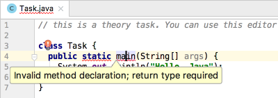

Introduction
Short history
```java class Task { public static void main(String[] args) { // The line below will be ignored // System.out.println("Hello, World");
// It prints the string "Hello, Java"
System.out.println("Hello, Java"); // You can write a comment here
} } `` 